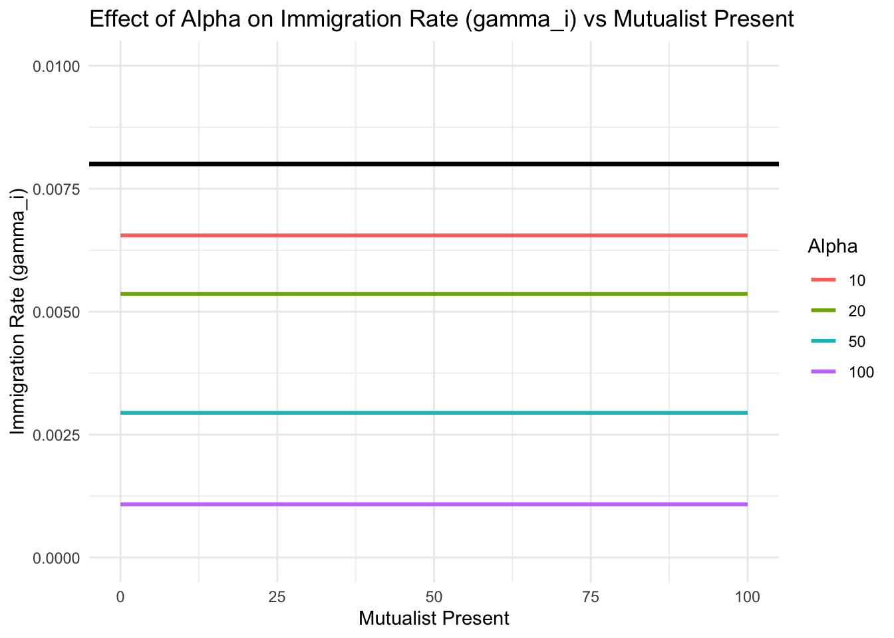
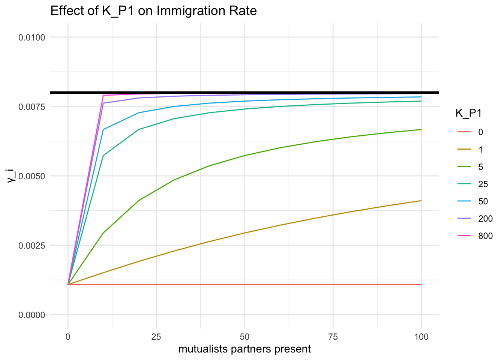
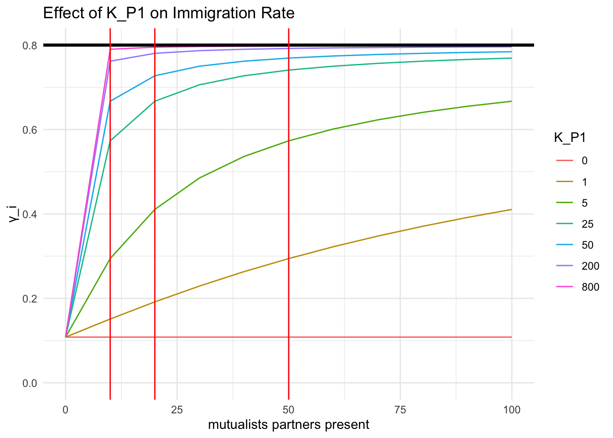
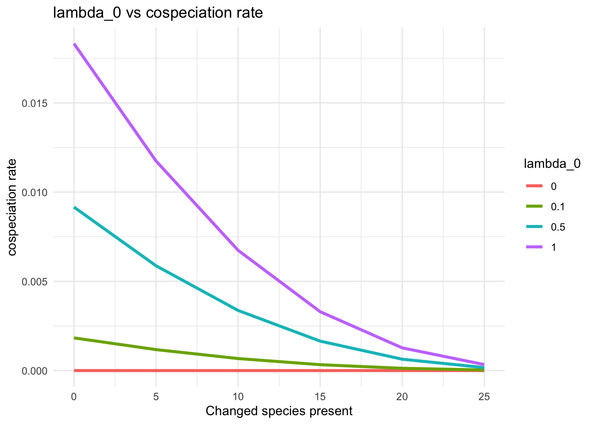
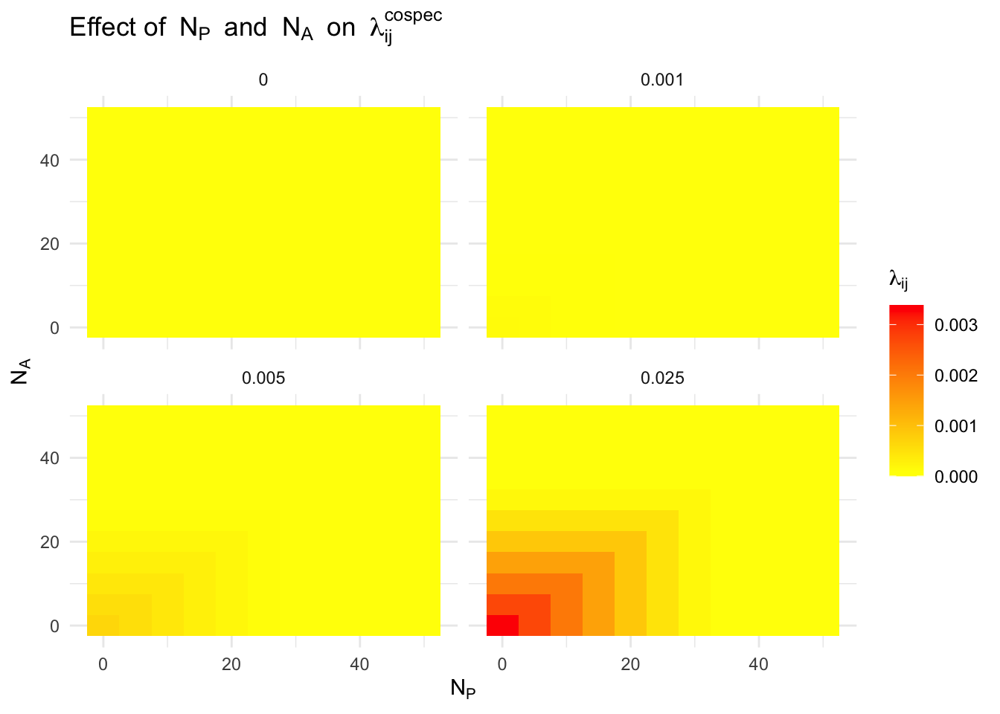
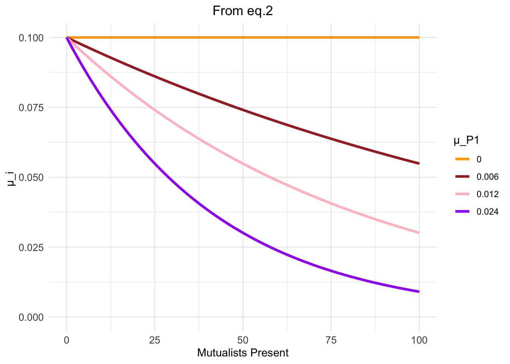
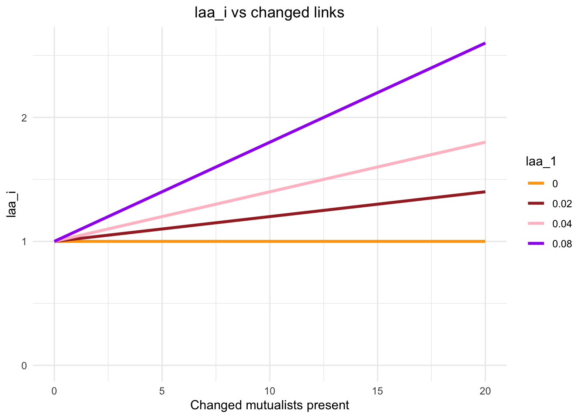

library(ggplot2)
library(dplyr)
library(scales)
library(plotly)
rm(list = ls())
# This is the model function with all parameters as arguments in
immigration_rate <- function(gamma_P0, alpha, K_P0, K_P1, mutualist_present, N_P) {
denominator <- max(0, K_P0 + K_P1 * mutualist_present - N_P)
if (denominator == 0) {
return(0) # To avoid division by zero
}
gamma_i <- gamma_P0 * exp(-alpha / denominator)
return(gamma_i)
}new_one_for_params
Immigration rate
The model is:
\[
\gamma_i = \gamma_{P0} * exp(- \frac{\alpha}{K_{P0} + K_{P1} \sum_{j=1}^{N_A} M_{ij} A_j-N_P})
\]
\[ \gamma_i = 0, \quad \text{if} \quad K_{P0} + K_{P1} \sum_{j=1}^{N_A} M_{ij} A_j \leq N_P \]
Explore the immigration space
The effect of \(\alpha\) , x-axis is the number of mutualistic partners ALREADY on the island.
# Define fixed parameters
gamma_P0 <- 0.008
K_P0 <- 50
K_P1 <- 0
N_P <- 0
# Define a range of mutualist_present values and alpha values
mutualist_present_values <- seq(0, 100, by = 10)
alpha_values <- c(10, 20, 50, 100)
# Generate all combinations of mutualist_present and alpha
parameter_grid <- expand.grid(mutualist_present = mutualist_present_values, alpha = alpha_values)
# Calculate gamma_i for each combination of mutualist_present and alpha
parameter_grid$gamma_i <- mapply(function(mutualist_present, alpha) {
immigration_rate(gamma_P0, alpha, K_P0, K_P1, mutualist_present, N_P)
}, parameter_grid$mutualist_present, parameter_grid$alpha)
# Plot using ggplot2
ggplot(parameter_grid, aes(x = mutualist_present, y = gamma_i, color = factor(alpha))) +
geom_line(linewidth = 1) +
labs(title = "Effect of Alpha on Immigration Rate (gamma_i) vs Mutualist Present",
x = "Mutualist Present",
y = "Immigration Rate (gamma_i)",
color = "Alpha") +
scale_y_continuous(limits = c(0.000, 0.010)) +
geom_hline(yintercept = 0.008, linewidth = 1.2, color = "black") +
theme_minimal()
Suppose plant species have mutualistic partners (namely animal species) varying from 0 to 100 present on the island, and with a fixed initial carrying capacity, a smaller \(\alpha\) makes a closer and more flat line to the maximum immigration rate \(\gamma_0\) . We want to save some room for mutualism effects, so we will keep it “large”, e.g. two times to \(K_{P0}\) . I chose \(\alpha\) 100, \(K_{P0}\) 50, because I want to leave more room for mutualism to kick in.
Suppose \(K_{P0}\) is 50, \(\alpha\) is 100, we check how does \(K_{P1}\) affect \(\gamma_i\). x-axis is the mutualistic partners ALREADY present on the island.
# Set fixed parameters gamma_P0 <- 0.008 # Initial and maximum immigration rate K_P0 <- 50 # Initial carrying capacity alpha <- 100 N_P <- 0 # Number of present plant species # Set varying parameters K_P1_values <- c(0, 1, 5, 25, 50, 200, 800) m_values <- seq(0, 100, by = 10) # present mutalists # Create a data frame to store results results <- expand.grid(m_values = m_values, K_P1 = K_P1_values) %>% rowwise() %>% mutate(gamma_i = immigration_rate(gamma_P0, alpha, K_P0, K_P1, m_values, N_P)) # Plot the results ggplot(results, aes(x = m_values, y = gamma_i, color = as.factor(K_P1))) + geom_line() + geom_hline(yintercept = gamma_P0, linewidth = 1.2, color = "black") + #geom_vline(xintercept = c(0, 20, 40, 80), color = "red") + labs(title = 'Effect of K_P1 on Immigration Rate', x = 'mutualists partners present', y = 'γ_i', color = 'K_P1') + scale_y_continuous(limits = c(0, 0.01)) + theme_minimal()
When \(K_{P1}\) is over 25, increasing it doesn’t help significantly increase \(\gamma_i\), because of the denominator is already large, the rate at which the exponent approaches zero slows down as \(K_{P1}\) increases, leading to diminishing returns in terms of increasing \(\gamma_i\).
Decisions on parameters
# gamma_0 <- 0.008 or lower and 0.016 for higher initail immigration rate
# K_P0 <- 50
# alpha <- 100
# K_P1 <- c(0, 1, 5, 25)Cladogenesis rate
The model is:
\[ \lambda^c_i = \lambda^c_{P0} * exp(- \frac{\alpha}{K_{P0} + K_{P1} \sum_{j=1}^{N_A} M_{ij} A_j-N_P}) \]
\[ \lambda^c_i = 0, \quad \text{if} \quad K_{P0} + K_{P1} \sum_{j=1}^{N_A} M_{ij} A_j \leq N_P \]
The pattern is pretty much like immigration rate, but with a higher initial value (I assumed it higher based on prior knowledge of empirical data).
Explore the cladogenesis space
library(ggplot2)
library(dplyr)
library(scales)
library(plotly)
rm(list = ls())
# This is the model function with all parameters as arguments in
cladogenesis_rate <- function(lac_P0, alpha, K_P0, K_P1, mutualist_present, N_P) {
denominator <- max(0, K_P0 + K_P1 * mutualist_present - N_P)
if (denominator == 0) {
return(0) # To avoid division by zero
}
lac_i <- lac_P0 * exp(-alpha / denominator)
return(lac_i)
}
# Set fixed parameters
lac_P0 <- 0.8 # Initial and maximum cladogenesis rate
K_P0 <- 50 # Initial carrying capacity
alpha <- 100
N_P <- 0 # Number of present plant species
# Set varying parameters
K_P1_values <- c(0, 1, 5, 25, 50, 200, 800)
m_values <- seq(0, 100, by = 10) # present mutalists
# Create a data frame to store results
results <- expand.grid(m_values = m_values, K_P1 = K_P1_values) %>%
rowwise() %>%
mutate(lac_i = cladogenesis_rate(lac_P0, alpha, K_P0, K_P1, m_values, N_P))
# Plot the results
ggplot(results, aes(x = m_values, y = lac_i, color = as.factor(K_P1))) +
geom_line() +
geom_hline(yintercept = lac_P0, linewidth = 1.2, color = "black") +
geom_vline(xintercept = c(10, 20, 50), color = "red") +
labs(title = 'Effect of K_P1 on Immigration Rate',
x = 'mutualists partners present',
y = 'γ_i',
color = 'K_P1') +
scale_y_continuous(limits = c(0, lac_P0)) +
theme_minimal()
In the scenario where no mutualism effects taking off, the cladogenesis rate in this model is slightly above 0.05. When there are some mutualistic partners present on the island, for example, 10 interacting animal species present on the island, the plant species who interact with the 10 animal species will get the cladogenesis rate at around 0.1 with low mutualism effects, at 0.22 with medium mutualism effects, and at 0.32 with high mutualism effects. They quite differ from each other. I think 0.4 for lower cladogenesis and 0.8 for a higher one is reasonable base on the paper “The limits to ecological limits to diversification” published in 2022.
Decisions on parameters
# lac_0 <- 0.4 or lower and 0.8 for higher initail immigration rate
# K_P0 <- 50
# alpha <- 100
# K_P1 <- c(0, 1, 5, 25)Co-speciation rate
The model is:
\[ \lambda_{ij}^{cospec} = \lambda_0M_{ij}P_iA_j * exp(- \frac{\alpha}{K_{P0} - N_P}) * exp(- \frac{\alpha}{K_{A0} - N_A}) \]
\[ \lambda^{cospec}_{ij} = 0, \quad \text{if} \quad K_{P0} \leq N_P \quad \text{or} \quad K_{A0} \leq N_A \]
Assume that:
both plant and animal species need to be present on the island
they are interacting with each other
co-speciation depends on mutualism
the available niches of plant and animal will affect cospeciation rate eventually
only interacting species matters not additional mutualistic partners
Explore the co-speciation space
rm(list = ls()) library(ggplot2) # Fixed parameters alpha <- 100 K_P0 <- 50 # Initial cospeciation rate lambda_0 <- c(0, 0.1, 0.5, 1.0) # Species present on the island, set `N_P` = `N_A` species_present <- seq(0, 25, by = 5) # Create space df <- expand.grid(species_present = species_present, lambda_0 = lambda_0) # Set lambda_cos to 0 if K_P0 > species_present, otherwise use the formula df$lambda_cos <- ifelse(K_P0 < df$species_present, 0, df$lambda_0 * (exp(-alpha / (K_P0 - df$species_present)) ^ 2)) ggplot(df, aes(x = species_present, y = lambda_cos, color = as.factor(lambda_0))) + geom_line(linewidth = 1.2) + labs(title = "lambda_0 vs cospeciation rate", x = "Changed species present", y = "cospeciation rate", color = "lambda_0") + theme_minimal()
Only when I set the \(\lambda_0\) high, (higher than initial immigration rate, 0.X), the start point for co-speciation rate is 0.00X to 0.0X. However, I found it hard to interpret the very high initial co-speciation rate, unless lower \(\alpha\) down. BUT, a low \(\alpha\) will make mutualism effects being less likely to affect the immigration rate (because the start point where no species present on the island will be very close to the maximum immigration rate).
We could:
(1) use \(\alpha_{immig}\) and \(\alpha_{cospec}\) for immigration rate and co-speciation rate independently.
(2) a new model:
\[ \lambda_{ij}^{cospec} = \lambda_0 \cdot M_{ij} \cdot P_i \cdot A_j \cdot \exp\left(-\frac{\alpha}{\min(K_{P0} - N_P, K_{A0} - N_A)}\right) \]
\[ \lambda^{cospec}_{ij} = 0, \quad \text{if} \quad K_{P0} \leq N_P \quad \text{or} \quad K_{A0} \leq N_A \]
rm(list=ls())
library(ggplot2)
# Define the function for lambda_ij^cospec
# Suppose species present on the island are all connected together, i.e. M_ij*P_i*A_j = 1
lambda_cospec <- function(lambda_0, alpha, K_P0, K_A0, N_P, N_A) {
denominator <- min(K_P0 - N_P, K_A0 - N_A)
# Avoid division by zero in the exponential term
if (denominator <= 0) {
return(0)
}
lambda_ij <- lambda_0 * exp(-alpha / denominator)
return(lambda_ij)
}library(dplyr)
# Fixed parameters
alpha <- 100
K_P0 <- 50
K_A0 <- 50
# Values for lambda_0
lambda_0_values <- c(0, 0.001, 0.005, 0.025)
# Varying N_P and N_A
N_P_values <- seq(0, 50, by = 5)
N_A_values <- seq(0, 50, by = 5)
pars_space<- expand.grid(lambda_0 = lambda_0_values,
N_P = N_P_values,
N_A = N_A_values) %>%
rowwise() %>%
mutate(lambda_ij = lambda_cospec(lambda_0, alpha, K_P0, K_A0, N_P, N_A))
pars_space$lambda_0 <- factor(pars_space$lambda_0, levels = lambda_0_values)
# Plot the results
ggplot(pars_space, aes(x = N_P, y = N_A, fill = lambda_ij)) +
geom_tile(aes(fill = lambda_ij)) +
facet_wrap(~lambda_0, scales = "fixed") + # Separate plots for each lambda_0
scale_fill_gradient(low = "yellow", high = "red") + # Color gradient based on lambda_ij
labs(title = expression("Effect of " ~ N[P] ~ " and " ~ N[A] ~ " on " ~ lambda[ij]^{cospec}),
x = expression(N[P]),
y = expression(N[A]),
fill = expression(lambda[ij])) +
theme_minimal()
Since co-speciation involves two species, min(K_P0 - N_P, K_A0 - N_A) makes sense biologically. This new model assumes co-speciation rate is constrained by the more limited “niche” availiability between plant and animal species. The interpretation of \(\lambda_0\) is easier compared to that in the old model.
Decisions on parameters
# lambda_0 <- c(0, 0.001, 0.005, 0.025)
# K_P0 <- 50
# K_A0 <- 50
# alpha <- 100Extinction rate
Explore the extinction rate space
The model is:
\[ \mu_i = \mu_{P0} * exp(- \mu_{P1} \sum_{j=1}^{N_A} M_{ij} A_j) \]
rm(list = ls())
library(ggplot2)
library(patchwork)
# Define the parameters for the first plot (Eq. 1)
mu_P0 <- 0.1 # Baseline extinction rate
mu_P1_values <- c(0, 0.006, 0.012, 0.024) # Different values for mu_P1
mutualists_present <- 0:100 # Number of mutualists present
df2 <- expand.grid(mutualists_present = mutualists_present, mu_P1 = mu_P1_values)
df2$mu_i <- mu_P0 * exp(-df2$mu_P1 * df2$mutualists_present)
# Plot for Eq. 2
ggplot(df2, aes(x = mutualists_present, y = mu_i, color = as.factor(mu_P1))) +
geom_line(linewidth = 1.2) +
scale_y_continuous(limits = c(0, mu_P0)) +
scale_x_continuous(limits = c(0, max(mutualists_present))) +
labs(title = "From eq.2",
x = "Mutualists Present",
y = "μ_i ",
color = "μ_P1") +
theme_minimal() +
scale_color_manual(values = c("orange", "brown", "pink", "purple")) +
theme(axis.text = element_text(size = 10),
plot.title = element_text(hjust = 0.5))
Decisions on parameters
# mu_0_low <- 0.1 # low initial extinction rate
# mu_0_high <- 0.2 # high initial extinction rate
# mu_1, (none, low, medium, high)
# (0, 0.006, 0.012, 0.024)Anagenesis rate
Explore the anagenesis rate
The model is:
\[ \lambda_i^a = \lambda_{P0}^a + \lambda_{P1}^a * \sum_{j=1}^{N_A} * |M_{ij} - m_{ij}|*A_j \]
rm(list = ls())
library(ggplot2)
# Changed mutualists present
changed_mutualists <- 0:20
# Initial anagenesis rate, can be adjusted later
laa_0 <- 1.0
# Different values for \lambda_{P1}^a
laa_1 <- c(0, 0.02, 0.04, 0.08)
# Create space
df <- expand.grid(changed_mutualists = changed_mutualists, laa_1 = laa_1)
df$laa_i <- laa_0 + df$laa_1 * df$changed_mutualists
# Plot
ggplot(df, aes(x = changed_mutualists, y = laa_i, color = as.factor(laa_1))) +
geom_line(linewidth = 1.2) +
scale_y_continuous(limits = c(0, max(df$laa_i))) +
labs(title = "laa_i vs changed links",
x = "Changed mutualists present",
y = "laa_i",
color = "laa_1") +
theme_minimal() +
scale_color_manual(values = c("orange", "brown", "pink", "purple")) +
theme(plot.title = element_text(hjust = 0.5))
Decisions on parameters
# laa_0_low <- 0.05 # low initial extinction rate
# laa_0_high <- 0.1 # high initial extinction rate
# laa_1, (none, low, medium, high)
# (0, 0.002, 0.004, 0.08)Gain and Loss rates
# qgain <- 0.001
# qloss <- 0.001Summary
# alpha = 100
# K_0 = 50
# K_1 = c(0, 1, 5, 25)
# gamma_0 = c(0.008, 0.016)
# mu_0 = c(0.1, 0.2)
# mu_1 =c(0, 0.006, 0.012, 0.024)
# laa_0 = c(0.5, 1.0)
# laa_1 = c(0, 0.002, 0.004, 0.08)
# lac_0 = c(0.4, 0.8)
# lambda_0 = c(0, 0.001, 0.005, 0.025)
# q_gain = 0.001
# q_loss = 0.001